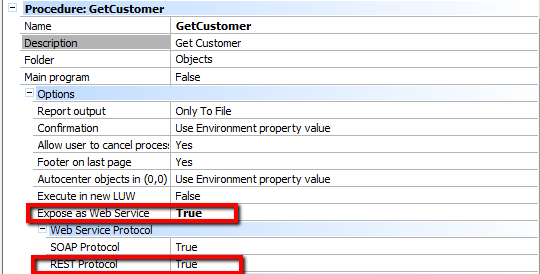
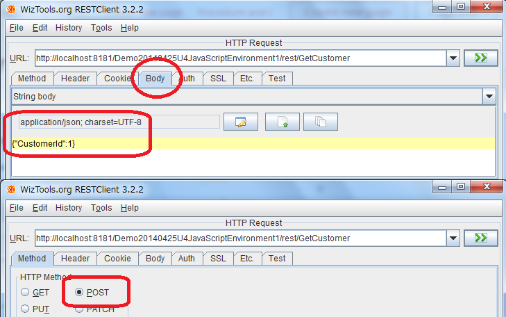

The following example shows a REST GeneXus procedure that returns information about a Customer, given its Identification. The GeneXus procedure (called "GetCustomer") is declared as REST by setting the following properties:
 The code is very simple, as shown below: Parm Rule: parm(in:&CustomerId,out:&CustomerName,out:&CustomerBirthDate,out:&CustomerPayDate); Source Code: for each where CustomerId = &CustomerId &customerName = CustomerName &CustomerBirthDate = CustomerBirthDate &CustomerPayDate = CustomerPayDate endfor The GeneXus client can be as follows:
&httpclient.Host =&host // &httpclient is an HTTPClient variable data type
&httpclient.Port = &port
&httpclient.BaseUrl = &baseurl //Example: /webappname/rest/
&customersdt.CustomerId= &customerId
&body = &customersdt.ToJson()
&httpclient.AddHeader('Content-type','application/json')
&httpclient.AddString(&body)
&httpclient.Execute('POST','GetCustomer')
&lvc = &httpclient.ToString()
Since the response is in Json format: {"CustomerBirthDate":"1989-06-03","CustomerName":"Francisco","CustomerPayDate":"1995-03-21T18:54:00"} the result should be processed using , loading the Json response in an SDT (Structure SDT Object) with the corresponding structure. NOTE
How do we call a REST procedure object from a general REST client?In general, we set the following:
 Based on the previous sample calling a 'GetCustomer' object, a sample request is as follows:
POST /Demo20140425U4JavaScriptEnvironment1/rest/GetCustomer HTTP/1.1
Content-Length: 17
Content-Type: application/json; charset=UTF-8
Host: localhost:8181
Connection: Keep-Alive
User-Agent: Apache-HttpClient/4.3.1 (java 1.5)
{"CustomerId":1}
And the response is as follows:
HTTP/1.1 200 OK
Server: Apache-Coyote/1.1
Set-Cookie: JSESSIONID=D737067FECD79CD466F29877D3B74375; Path=/Demo20140425U4JavaScriptEnvironment1/; HttpOnly
Last-Modified: Wed, 23 Jul 2014 06:29:04 GMT
Content-Type: application/json;charset=UTF-8
Transfer-Encoding: chunked
Date: Wed, 23 Jul 2014 06:29:05 GMT
58
{"CustomerName":"miura","CustomerBirthDate":"2014-07-01","CustomerPayDate":"2014-07-01"}
0
See Also
|
| Backlinks | |
| REST Protocol property | Toc:Rest web services in GeneXus |